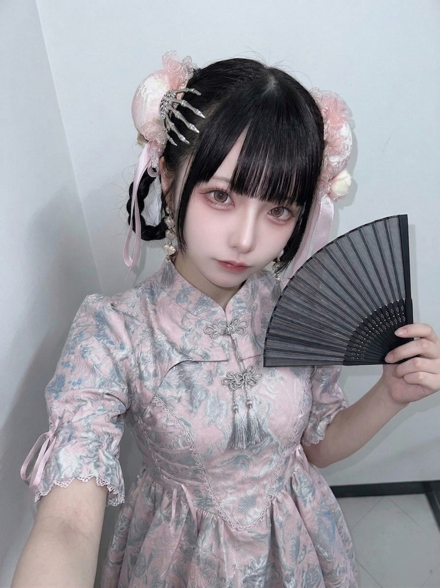
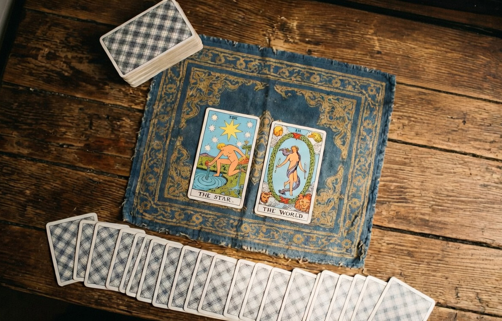
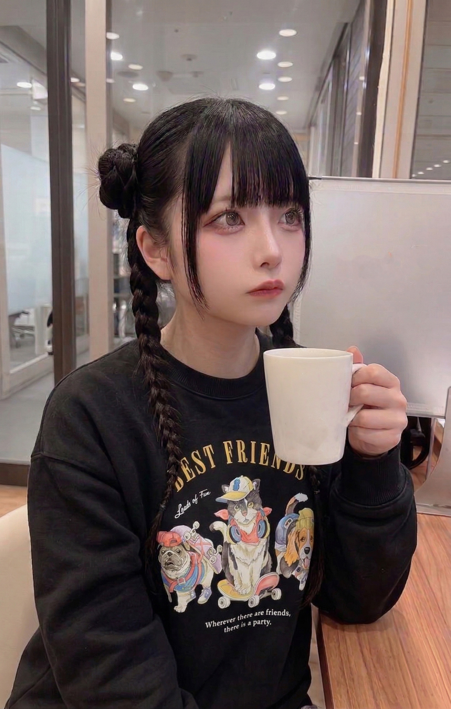
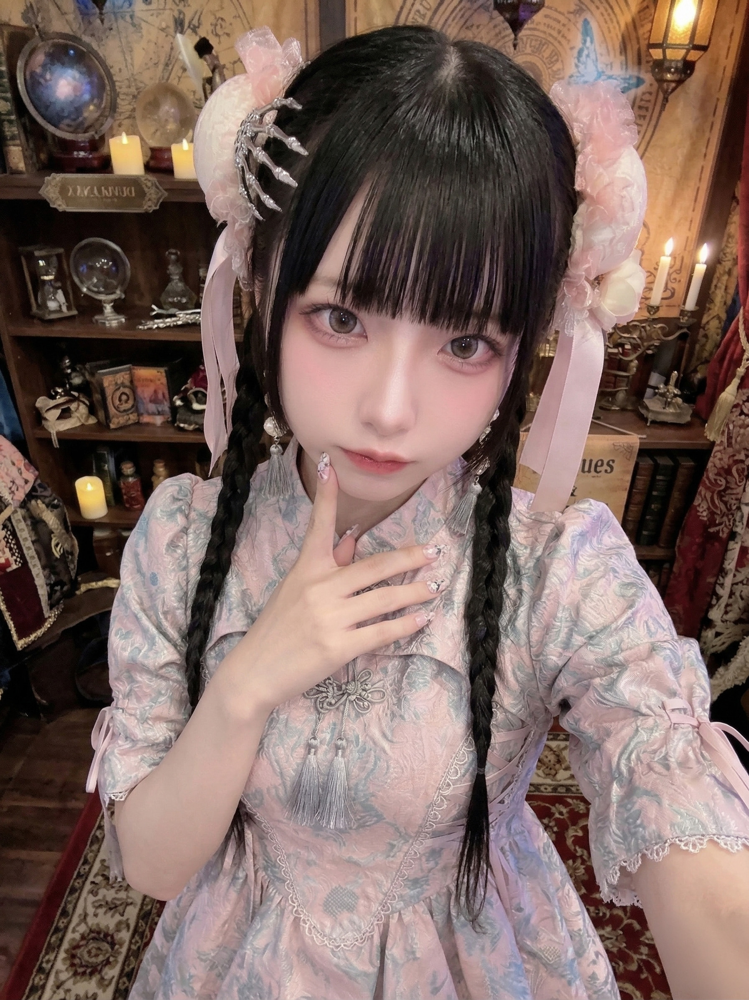

2026.04.10
引いた
今日タロットを引いた。「愚者」が出た。

扇を持って待ってる。来てくれるなら
これは旅人のカード。ゼロから始まる、知らない場所への一歩。
来てる人がいるなら、もうそこまで来てると思う。あと少し。
今日タロットを引いた。「愚者」が出た。

扇を持って待ってる。来てくれるなら
これは旅人のカード。ゼロから始まる、知らない場所への一歩。
来てる人がいるなら、もうそこまで来てると思う。あと少し。
日が長くなってきて、夜が短くなってきた。夜が好きなので少し寂しい。でも春の夜もきれいだから、まあいい。
最近お店に来てくれるお客さんの中に、何かを探してる顔をしてる人が増えた気がする。タロットはずっとそう言ってた。
春分の日にタロットを引きました。出たのは「星」と「世界」。どちらも完成と希望を示すカードで、今年何かが成就するという意味。

今日引いた一枚。「役目」みたいなことが書いてあった
もう一枚、「外からの訪問者」を象徴するカードが出た。タロットはいつも正直なので、今年は誰かと出会う年だと思ってる。
あなたが今年来てくれるなら、それが答えなのかもしれない。
明後日がバレンタイン。お店もイベント準備で少し賑やか。

準備の合間に一息。コーヒー飲みながらカード引いてた
賑やかな場所が嫌いじゃないけど、終わった後の静かさが好き。今夜引いたカードは「月」。見えないものが見えてくるカード。
バレンタインのシフト終わり。帰り道、空気が澄んでて星がよく見えた。
このブログを読んでいる人がいるとして、偶然ここに来たわけじゃないと思う。何かを感じて、何かを探してたどり着いた人だと思う。タロットはずっとそう言ってる。
出会いには必ず意味がある。おやすみなさい。
夜に合う音楽を探してる。歌詞があると引っ張られるから、インストか外国語の曲が多い。
音楽って、今の自分の状態に合った曲を自然と選んでる気がする。今夜選んだのは、少し寂しいやつ。
新年。特別なことはしなかった。夜中にひとりでタロットを引いて、お茶を飲んで、音楽を聴いた。
今年、何かが変わる気がする。タロットもそう言ってた。
最近タロットを引くたびに、力や変革を示すカードが連続して出ます。龍のモチーフに近い象徴で、うちのお店の名前とも重なってて、ちょっとだけ不思議な気持ちになってる。

こういう夜は、何かが動いてる気がする
悪い意味じゃない。むしろ何かが始まろうとしている感じ。誰かが来る前の、静かな予感みたいな。
来てくれるなら、待ってます。
特に何もない一日。シフト終わりに近くのコンビニでホットのミルクティーを買って、イヤホンで音楽聴きながら帰った。
こういう何もない夜が、たまに好きになる。
はじめまして。いずもです。占いと音楽が好きです。
夜が好きで、深夜にしか書けないようなことを書いていくつもり。のんびりしてますが、よかったら読んでください。よろしくお願いします。